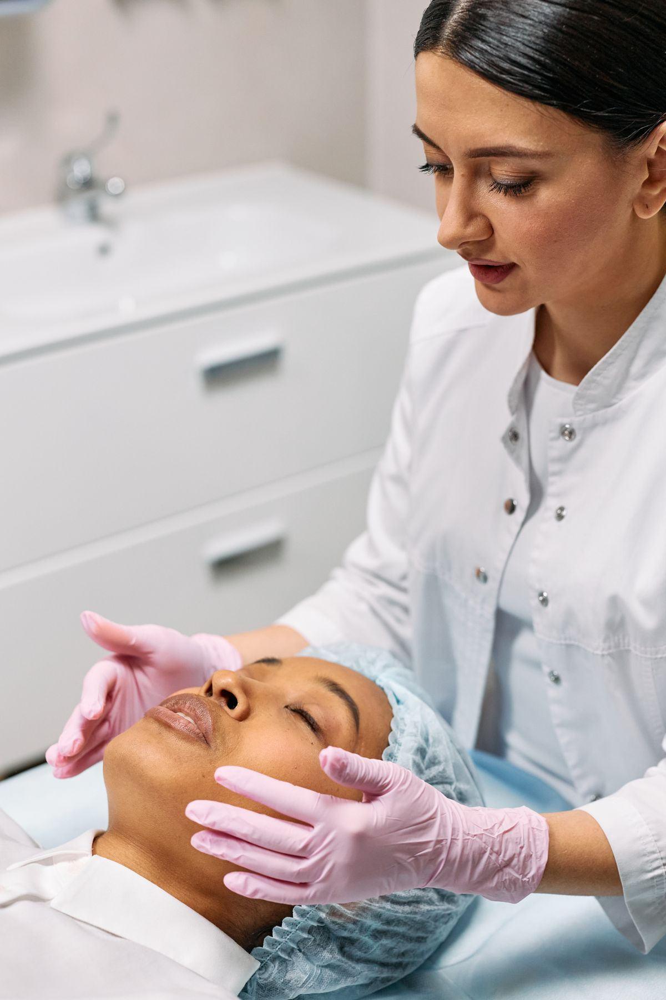
کانتورینگ و لیفت صورت
تزریق هدفمند در زاویه فک، خط فک، چانه و میدفیس برای بازتعریف کانتور، ایجاد ساپورت ساختاری و لیفتی ظریف و طبیعی.
در کلینیک دکتر سورنا رضوانی در الهیه، هر درمان با آنالیز آناتومیک چهره شروع میشود و مرحلهبهمرحله پیش میرود؛ هدف، بازسازی ظریف فرم و کیفیت پوست است — نه تغییر اغراقآمیز چهرهای که دوستش دارید.
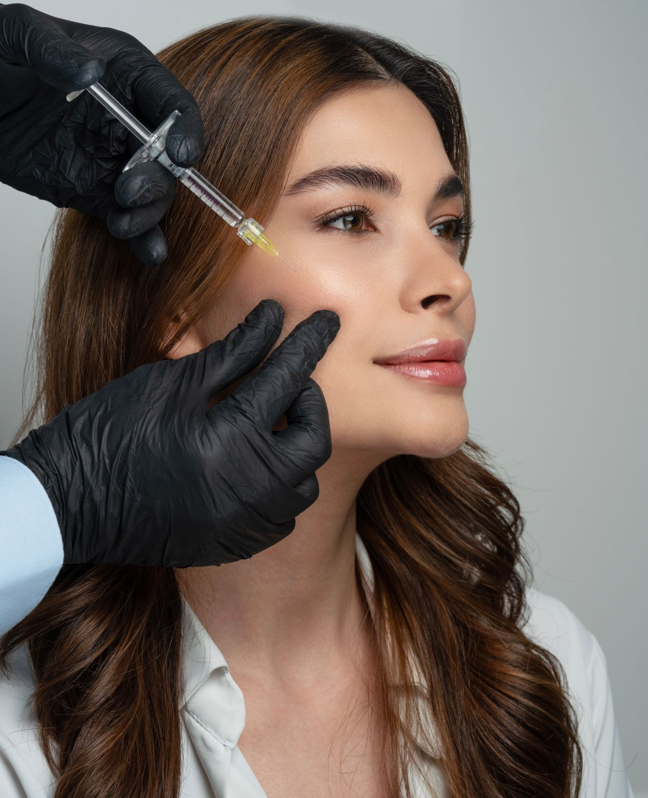
از بازتعریف فرم صورت تا تقویت فولیکول مو و حذف موهای زائد؛ هر خدمت با برنامهای متناسب با آناتومی و نیاز شما.

تزریق هدفمند در زاویه فک، خط فک، چانه و میدفیس برای بازتعریف کانتور، ایجاد ساپورت ساختاری و لیفتی ظریف و طبیعی.

جبران حجمهای ازدسترفته — مثلاً پس از کاهش وزن — و بهبود کیفیت پوست، بهصورت تدریجی و در چند جلسه تا نتیجه هماهنگ و طبیعی بماند.
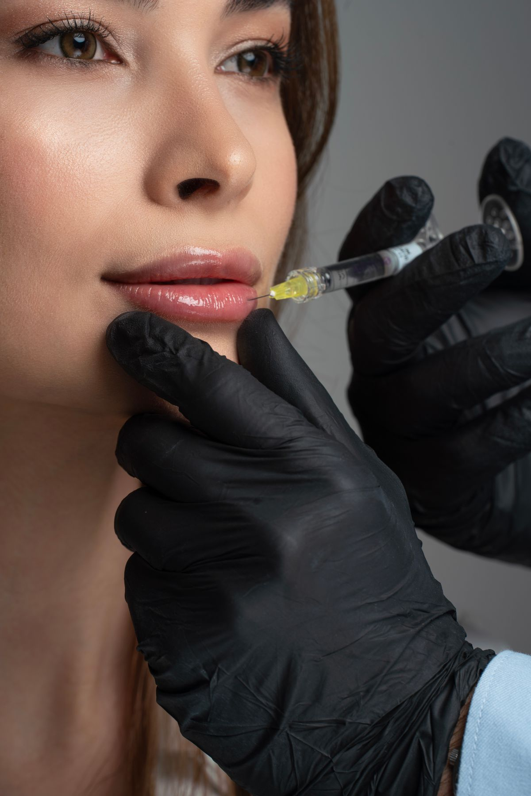
فیلر لب — از جمله تکنیک لب روسی — چانه و میدفیس؛ با تمرکز بر تناسب اجزای صورت و حفظ فرم طبیعی، بدون حجم اغراقآمیز.
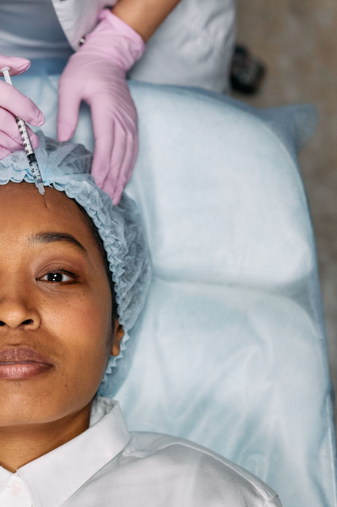
بوتاکس فولفیس و بالاتنه صورت برای ایجاد بالانس عضلانی و کاهش خطوط؛ معمولاً در کنار برنامه جوانسازی و بازسازی کانتور انجام میشود.
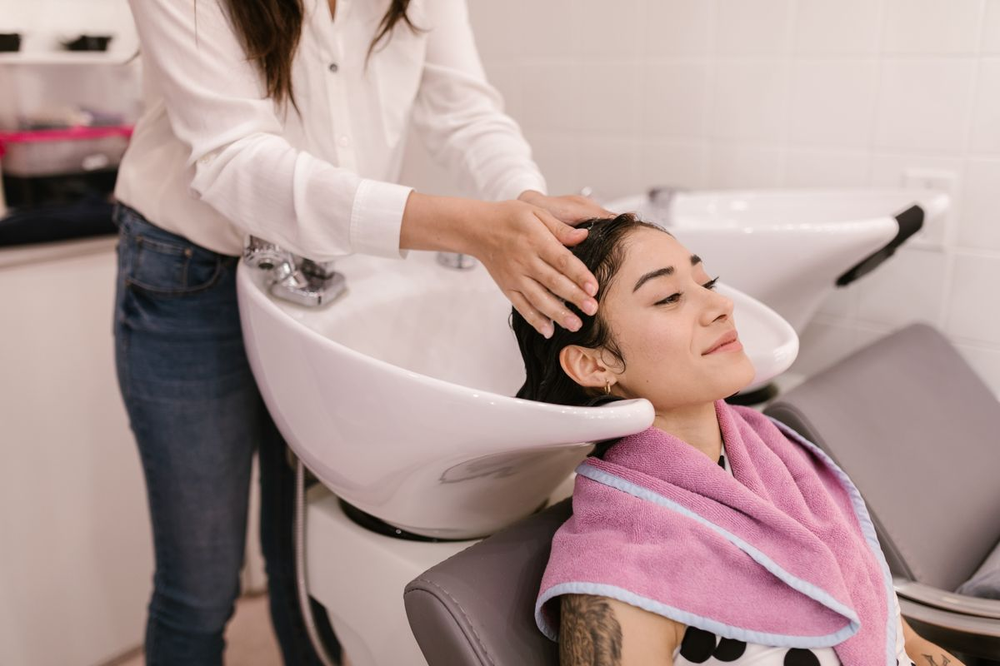
درمان تخصصی پوست سر و فولیکولهای مو برای تقویت ریشه مو و بهبود کیفیت و سلامت موها.
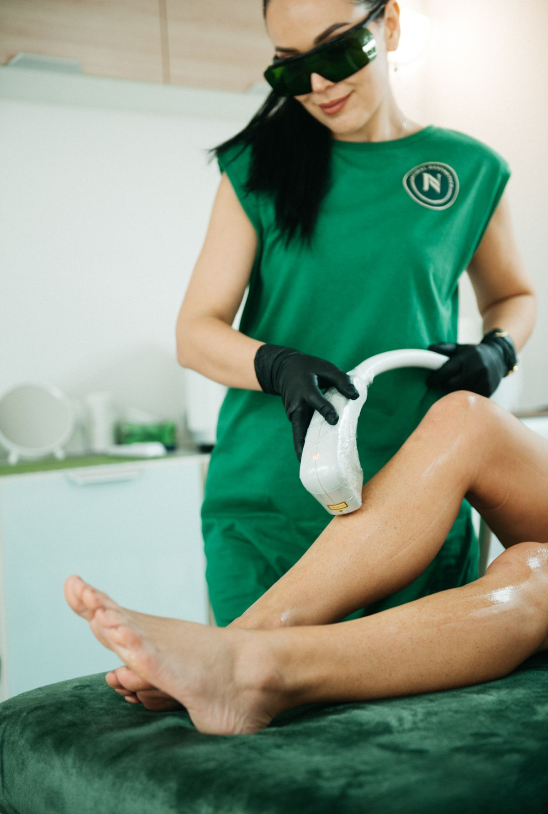
حذف موهای زائد به روش لیزر و الکترولیز؛ نتیجه مطلوب از ترکیب تکنولوژی دستگاه، تخصص اپراتور و استانداردهای حرفهای به دست میآید.
نشانههای مشابه روی چهره، لزوماً علت یکسان ندارند؛ برای همین در این کلینیک، انتخاب روش درمان از آنالیز دقیق ساختار چهره شروع میشود، نه از یک نسخه ثابت برای همه.
هر تزریق با تکیه بر آنالیز آناتومیک و اصول زیباییشناسی چهره طراحی میشود تا فرم نهایی با اجزای صورتتان هماهنگ باشد.
تزریقهای مینیمال و هدفمند با مقادیر کنترلشده؛ ویژگیهای اصلی چهرهتان حفظ میشود و تغییر، ظریف و متناسب است.
برنامه درمان میتواند در چند جلسه و بهتدریج پیش برود؛ بازسازی ساختار و کیفیت پوست، قدمبهقدم و قابلکنترل انجام میشود.
مراقبتهای بعد از تزریق بهصورت دقیق توضیح داده میشود تا دوره بهبودی کوتاه و نتیجه نهایی ماندگارتر شود.
محیطی آرام و حرفهای در الهیه، با استانداردهای درمانی روز.
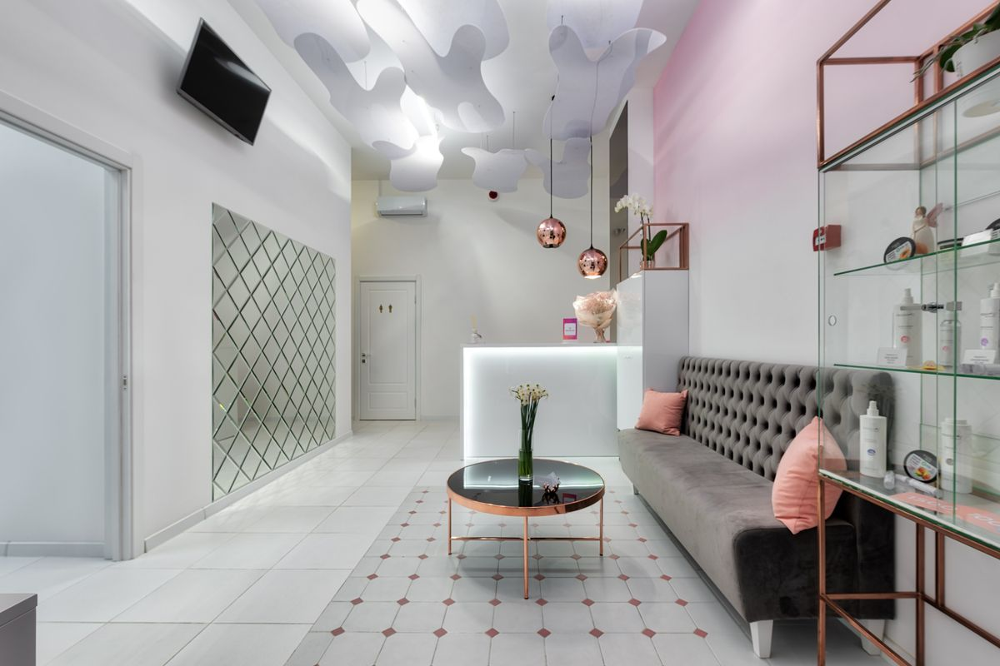
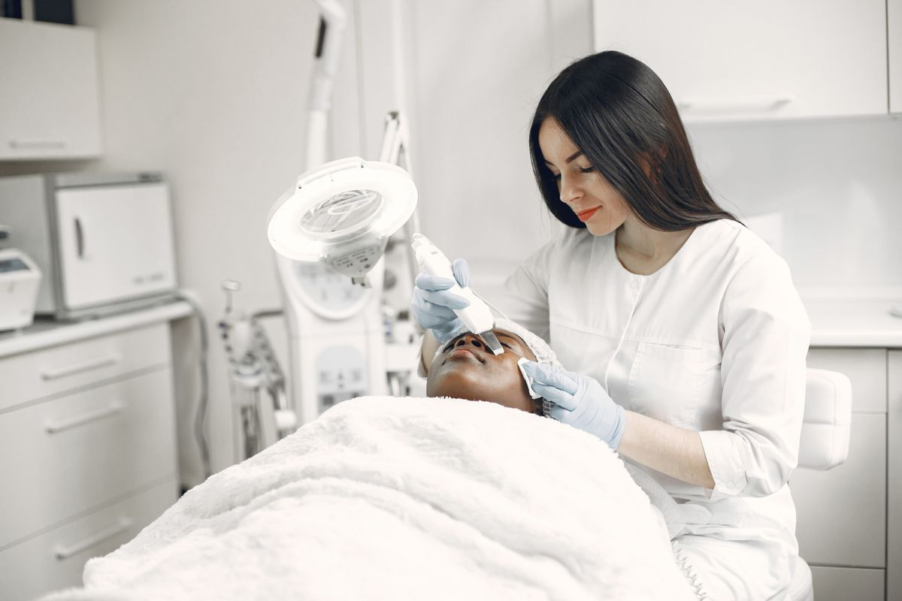
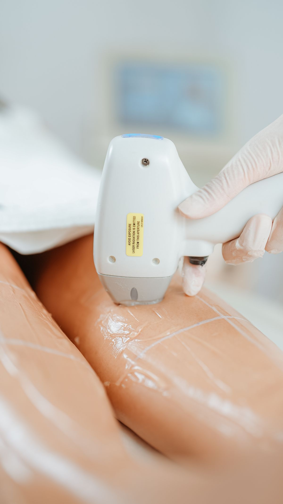
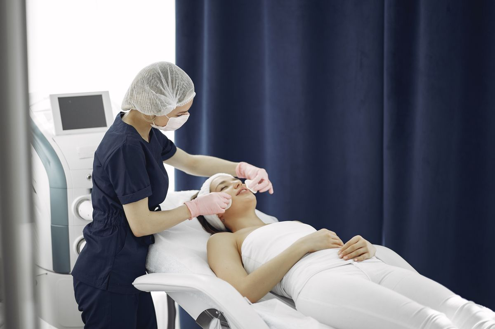
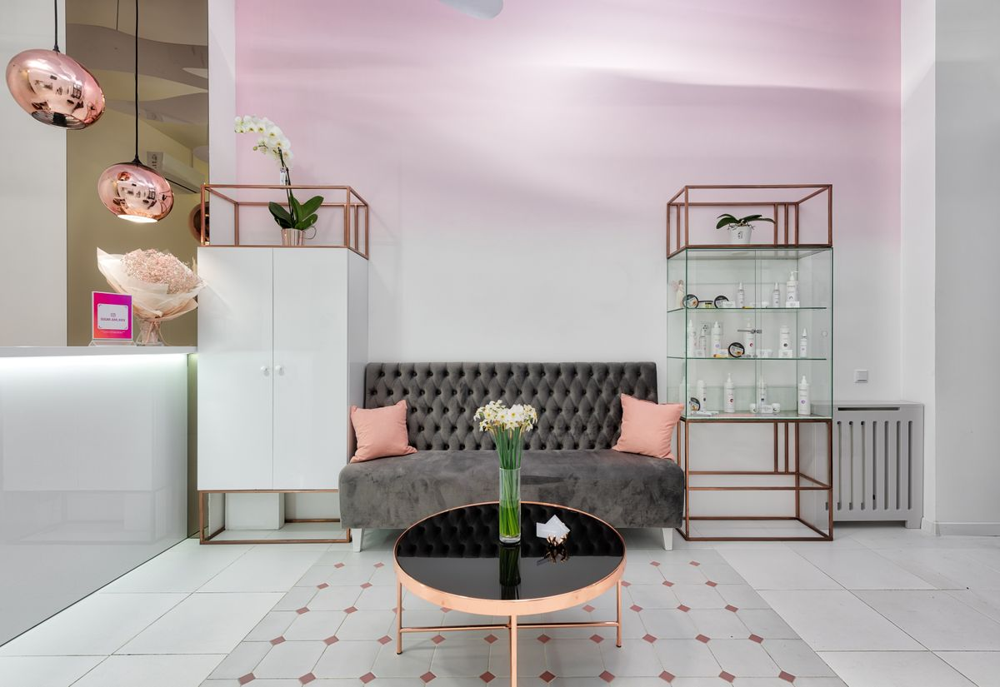
مسیر درمان شفاف و مرحلهبهمرحله است؛ در هر قدم میدانید چه اتفاقی میافتد.
در واتساپ پیام بدهید؛ پس از مشاوره اولیه، چهرهتان بهصورت آناتومیک بررسی میشود تا علت اصلی تغییرات مشخص شود.
برنامه درمان متناسب با ساختار چهره و هدف شما طراحی میشود؛ چه یک تزریق مینیمال باشد، چه یک پروسه چندجلسهای.
درمان با تزریق هدفمند و مقادیر کنترلشده انجام میشود تا ساپورت بافتی و فرم طبیعی چهره همزمان حفظ شود.
مراقبتهای بعد از درمان — مثل پرهیز از ورزش سنگین و گرمای شدید در ساعات اولیه — توضیح داده میشود و روند بهبود پیگیری میشود.
کافی است در واتساپ به شماره ۰۹۱۲۰۴۷۸۱۳۴ پیام بدهید؛ مشاوره اولیه و تعیین نوبت از همین مسیر انجام میشود. کلینیک در الهیه، خیابان بیدار، پلاک ۲۹، طبقه ۲، واحد ۱۱ قرار دارد.
رویکرد کلینیک، تزریق مینیمال و هدفمند است: مقادیر محدود در نقاط مشخص، با هدف اصلاح ظریف کانتور و بهبود ساپورت بافتی — بدون افزایش حجم قابلتوجه یا تغییر در ویژگیهای اصلی چهره.
بسته به هدف درمان متفاوت است؛ بعضی درمانها در یک جلسه کامل میشوند و بعضی برنامهها — مثل بازسازی پس از کاهش وزن — بهصورت پروسهای چندجلسهای و تدریجی طراحی میشوند تا نتیجه طبیعی و هماهنگ بماند.
در ساعات اولیه پس از تزریق، از ورزش سنگین، گرمای شدید و لمس یا فشار مکرر روی ناحیه تزریق پرهیز کنید؛ این کارها میتوانند تورم، کبودی و التهاب را بیشتر کنند. دستور مراقبتی کامل پس از درمان به شما داده میشود.
الهیه، خیابان بیدار — پاسخگویی سریع برای مشاوره اولیه و رزرو نوبت.